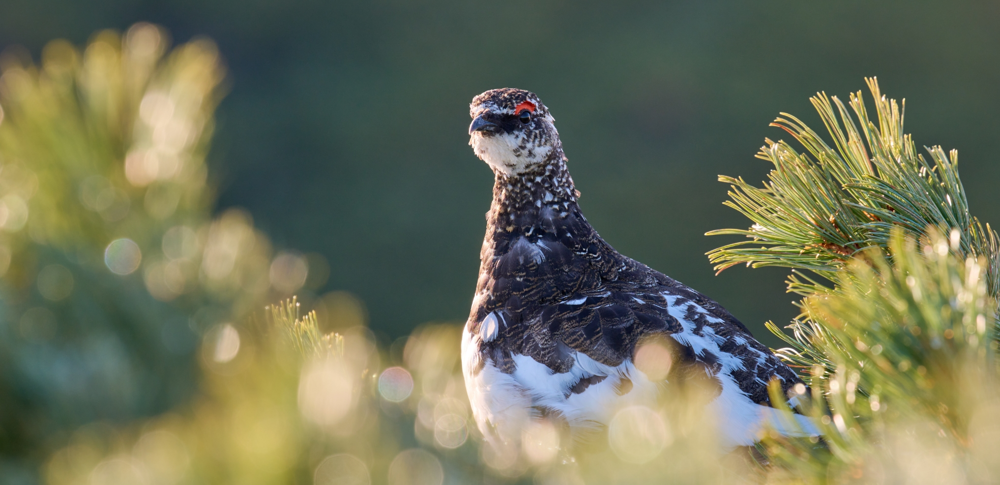

南アルプスの自然環境を守る 寄付お願い

南アルプスの豊かな自然を守るため、
皆様のご支援が必要です。
あなたの寄付が、
南アルプスの自然環境を守る力になります。
いま、南アルプスは様々な危機に陥っています。
貴重な南アルプスの自然を
未来へ残すために
皆様のご支援をお願いしております。
私たちの取り組む課題
南アルプスの自然
南アルプスは、ライチョウに代表される氷河期の遺存種と呼ばれる希少種にとっては、世界の南限の生息地となっています。
貴重な高山植物のお花畑の危機
南アルプスは、氷河が存在していた日本アルプスの中でも最も南に位置することから地球温暖化の影響を最も大きく受けるとともに、近年、シカによる食害が、希少なお花畑だけでなく、南アルプスの生態系全体に大きな影響を及ぼしています。
なぜ南アルプスの保全活動に取り組むのか
南アルプスは、その希少な生態系とそれを守る地域の関りが評価され、2014年にユネスコエコパークに認定されています。
【ユネスコエコパークとは】
【南アルプスユネスコエコパーク】
一方、南アルプスの自然環境を守ってきた麓の集落は、高齢化や過疎化で、その活動を支えることが困難になりつつあります。
このままでは、南アルプスの良好な自然環境を次の世代に引き継ぐことが難しくなってしまいます。
支援金の使い道
みなさまからのご支援は、次のような活動に活用させていただきます。
1.より多くの方々に南アルプスの価値や魅力、現状や課題を知っていただくための取組
2.シカ柵の設置など、直接的な生態系の保全活動や環境調査
3.学校などへの出前授業や体験学習会
4.南アルプスの保全活動全般に係る諸費